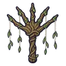

มือกิ่งหลิว
มอนธาตุดิน Lv 72–88
เจอที่
| แมพ | โซน | Lv | ภูมิภาค |
|---|---|---|---|
| ป่าต้นหลิวจมน้ำ | 72–88 | ที่ราบสูง | |
| ป่าต้นหลิวจมน้ำ | หลิวยักษ์ร้องไห้ | 83–88 | ที่ราบสูง |
ค่าสถานะตามเลเวล
| Lv | HP | ATK | DEF | MDEF | EXP | Job |
|---|---|---|---|---|---|---|
| 72 | 33,457 | 152–227 | 29 | 13 | 93 | 70 |
| 80 | 45,283 | 173–259 | 32 | 14 | 102 | 77 |
| 88 | 60,432 | 196–292 | 35 | 16 | 112 | 84 |
ตีด้วยธาตุไหนดี
แรงขึ้น: ไฟ ×1.5 พิษ ×1.25
เบาลง: ลม ×0.5 ดิน ×0.25
วัตถุดิบที่ดรอป
| ของ | โอกาส | |
|---|---|---|
| ปมกิ่งหลิว | 55% | 1 ชิ้น (15% ได้ 2) |
อุปกรณ์ที่ดรอป (1)
| ของ | โอกาส |
|---|---|
 ไม้เชิดหุ่นมือกิ่งหลิว | 0.06% |
สกิล
ดึง (Lv 25+) · ดึง (Lv 60+) · ทุบพื้น (Lv 60+)